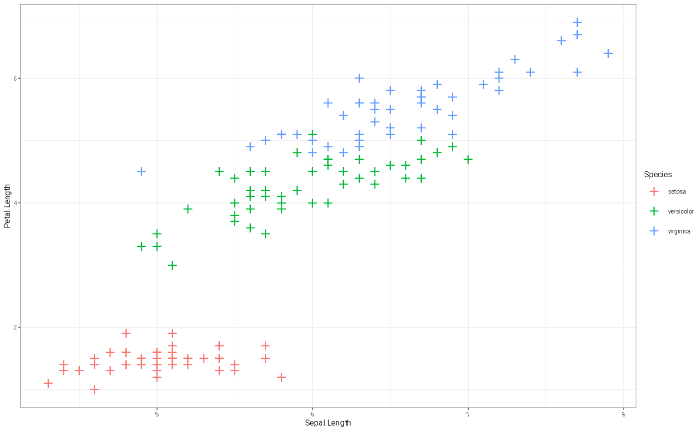
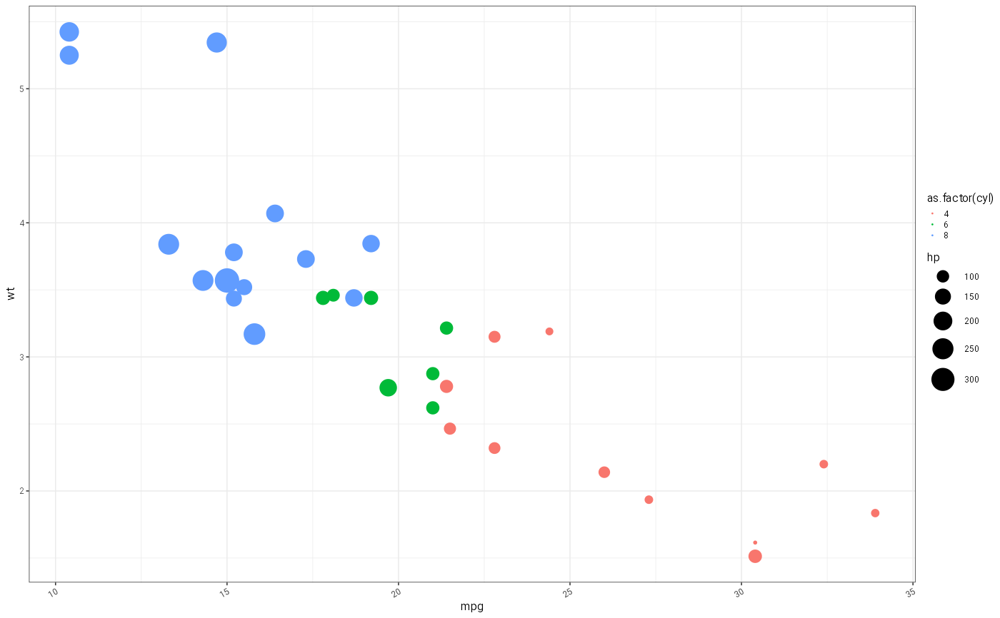

I often want to make a function that does both data manipulation or summarisation and plotting of the summary, or combines data from multiple sources. I often want to reuse this and apply similar options to several layers at once, without causing a whole lot of grief. This function allows you to pass on data, augment a aesthetic mapping, and pass on other styling to a set of layers filtering them so they are relevant to the geom. I almost never want `inherit.aes` to be true.
Arguments
- geom
The `ggplot2` layer e.g. `ggplot2::GeomPoint`
- data
the data you are going to plot - optional and will be inherited
- mapping
a mapping typically inherit from the higher level function call or augmented (see example)
- ...
inherit from the higher level function to enable user customisation these are checked for their relevance to the `geom` before being passed on
- .default
a list containing default aesthetics e.g. `list(colour='blue')` that can be overridden by the user if they supply a `...` or `mapping` aesthetic that overrides.
- .switch_fill
do you want to use the colour aesthetic for fill for this layer. Most commonly I want to do this with ribbons.
Examples
# top level function contains `...` and `mapping` extensions points:
myPlot = function(data, formula, ..., mapping = .gg_check_for_aes(...)) {
xCol = rlang::f_lhs(formula)
yCol = rlang::f_rhs(formula)
ggplot2::ggplot(data)+
gg_layer(
ggplot2::GeomPoint,
data = data,
mapping=ggplot2::aes(x=!!xCol, y=!!yCol, !!!mapping),
...,
.default = list(size=10)
)
}
myPlot(iris, Sepal.Length~Sepal.Width, mapping = ggplot2::aes(colour=Species))
myPlot(iris, Sepal.Length~Petal.Length, mapping = ggplot2::aes(colour=Species), shape="+", size=5)

myPlot(mtcars, mpg~wt, mapping = ggplot2::aes(colour=as.factor(cyl), size=hp))
